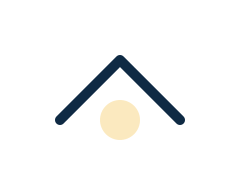

Compliance
Audit-ready frameworks and privacy programs designed for growing organizations.
DPO as a Service
Vi holder din virksomhed GDPR compliant
Som ekstern databeskyttelsesrådgiver (DPO), gør vi det nemmere for din virksomhed at leve op til de gældende GDPR krav og omsætte reglerne for databeskyttelse til praksis.
Vi sørger for dokumentation, fremdrift og underretninger, så I løbende overholder persondataforordningen. Vi fungerer også som uvildig rådgiver og kontaktperson til Datatilsynet.
Hør hvordan vi kan hjælpe din virksomhed. Kontakt os på +45 30 65 43 35 eller skriv til os:
Vær klar når GDPR-kravene opdateres
Persondataforordningen er et levende dokument, hvis overholdelse præciseres af de sager, som Datatilsynet træffer afgørelse i. Det er derfor nødvendigt at følge en GDPR-køreplan, der viser at man som virksomhed er opdateret ift. beskyttelse af persondata.
Vi tilbyder DPO aaS til virksomheder, som ønsker en ekstern databeskyttelsesrådgiver. På den måde har I kun udgifter til de faste opgaver, ligesom det er let at skalere op efter behov – fx hvis der sker et sikkerhedsbrud. En DPO rådgiver arbejder tæt sammen med virksomhedens dataansvarlige, men skal have mulighed for at give uvildig rådgivning.
Med DPO service fra Sixtus får din virksomhed:
- Styr på alle registreringer hos Datatilsynet
- Korrekt håndtering af databehandleraftaler
- Implementering af alle nødvendige procedurer
- Assistance ifbm. indsigtsanmodninger
- Konsekvens- og risikoanalyser (DPIAs)
- Rådgivning om IT-procedurer ift. GDPR compliance
- Akut support i tilfælde af databrud
- Årligt eftersyn med opdatering af al dokumentation
- Løbende revision af den interne datahåndtering og dokumentation
- Support og rådgivning i tilfælde af ekstern audit
- Intern uddannelse i korrekt håndtering af persondata
- Adgang til Sixtus Scanner
Hvilke virksomheder skal have en DPO?
Ifølge persondataforordningen er det kun virksomheder, hvis kerneaktivitet er behandling af personoplysninger, virksomheder der i stort omfang behandler personoplysninger og følsomme oplysninger, samt virksomheder, som systematisk har personer registreret.
Hvis du er i tvivl om din virksomhed skal have en DPO, så er du velkommen til at kontakte os for uvildig rådgivning.
Compliance services
Everything you need to stay audit-ready, privacy-safe, and accountable.
Audit preparation
Gap analysis, readiness plans, and documentation that meet regulator expectations.
DPO as a Service
External Data Protection Officer coverage with senior legal-tech support.

GDPR & privacy projects
Privacy program builds, DPIAs, and vendor assessments delivered efficiently.
Internal compliance & audit
Internal control frameworks, audit trails, and training tailored to your teams.
Lexoforms
Smart templates for risk assessments, registers, and compliance reporting.
Whistleblower Software
Secure reporting channels with triage workflows and incident oversight.
Lexoforms: GDPR compliance på abonnement
Sixtus og Lexoforms ønsker at hjælpe både startups og etablerede SMVs med at få styr på GDPR. Vi ved at GDPR ikke altid står øverst på listen, når man har travlt med at drive og vækste sin virksomhed.
For at gøre det så nemt, som muligt, har vi lavet en abonnementsordning, hvor vi tager os af det tunge arbejde, og i samarbejde gennemanalyserer vi jeres virksomhed.
Dermed kan vi kortlægge alt lige fra IT-systemer til processer, tjekke databehandleraftaler, lave risikoanalyser og meget mere.
Med et GDPR-abonnement fra Sixtus og Lexoforms, får I en løsning der sikrer, at I overholder gældende praksis. Abonnementet er altid inkl. basispakken:
- En personlig rådgiver, som følger jeres virksomhed og sikrer et stabilt samarbejde
- Deltagelse fra Sixtus i første møde ved tilsyn fra Datatilsynet
- Eftersyn af hjemmeside
- Årligt netværksmøde for vores Lexoforms kunder
- Fordelagtige priser på Sixtus Scanner
Det første år får I desuden følgende ydelser:
Pris første år: 20.000 DKK ex. moms + Lexoforms licens: 4.200 DKK ex. moms
- 1-2 opstartsmøder
- Gennemgang jeres systemer og behandlingsaktiviteter
- Indsamling og gennemgang af obligatoriske tilsyn af databehandlere
- Gennemgang af databehandleraftaler
- Opdatering og igangsættelse af GDPR-drift i Lexoforms
- 3 timers rådgivning, fx ved data brud, indsigtsanmodninger eller anden GDPR-konsultation
Efterfølgende år er “basispakken” stadig gældende, og ydelserne vil derudover se således ud:
Pris pr. år herefter: 12.500 DKK ex. moms. og inkluderer:
- Lexoforms licens
- Årligt opsamlingsmøde
- 2 timers rådgivning, fx ved data brud, indsigtsanmodninger eller anden GDPR-konsultation
- Gennemgang og opdatering af systemer og behandlingsaktiviteter
- Indsamling og gennemgang af obligatoriske tilsyn af databehandlere
- Gennemgang af databehandleraftaler
Whistleblower Software
Minimer din risiko og skab gennemsigtighed
Sixtus tilbyder, i samarbejde med vores partner Whistleblower Software Aps, et stærkt whistleblowerprogram, for virksomheder, der ønsker at sikre gennemsigtighed og høj fortrolighed for whistlebloweren.
Whistleblower Software, der netop er blevet ISAE 3000-certificeret, har udviklet et nyt software, der er med til at definere en ny generation af whistleblowertjenester. Systemet er brugervenligt, både i opsætning og administration og giver mulighed for at kunne rapportere anonymt, fortroligt eller begge dele. Samtidig sikres det at sagerne altid bliver videregivet til de korrekte parter i virksomheden.
Vil du høre mere om Whistleblower Software? Kontakt os på +45 30 65 43 35 eller info@sixtus-compliance.dk
Du kan stadig nå det!
I dag har de fleste store, børsnoterede virksomheder et whistleblowerprogram. Men pr. 17. december 2021 har alle private virksomheder med 250+ ansatte, været forpligtet til at have et whistleblowerprogram. For virksomheder i den private sektor med mellem 50-249 ansatte, udløber fristen til at etablere whistleblowerordninger dog først 17. december 2023.
Whistleblowerordning med Sixtus
Fælles er for alle er, at det skal kunne sikres, at whistlebloweren bliver beskyttet mod de potentielle konsekvenser, som er forbundet med en indberetning afgivet i god tro. Dermed er e-mails med interne brugere heller ikke nok; virksomheden skal sikre, at whistleblowerens identitet kan holdes 100% fortrolig.
Med Sixtus på sidelinjen, får du hjælp til implementering og support i hele processen. Implementeringspakken inkluderer følgende services:
- Intern undervisning
- Implementering af whistleblowerpolitik
- Implementering af interne processer
- Processer for håndteringen af anmeldelser
- Hjælp til oprettelse af et internt/eksternt whistleblowerboard
- Overvågning, validering og håndtering af indkomne sager
- Adgang til juridisk bistand ved komplicerede sager
- Rapportering og rapportskrivning
Internal compliance & audit support
We align documentation, policies, and training so your team stays confident year-round.
We map your controls, policies, and evidence to ensure fast regulator responses.
We provide an external DPO backed by a compliance team, reporting monthly.
Yes, we deliver tailored sessions for leadership, HR, IT, and data owners.
Ready to strengthen your compliance posture?
Let’s build a pragmatic roadmap for GDPR, governance, and audit readiness.